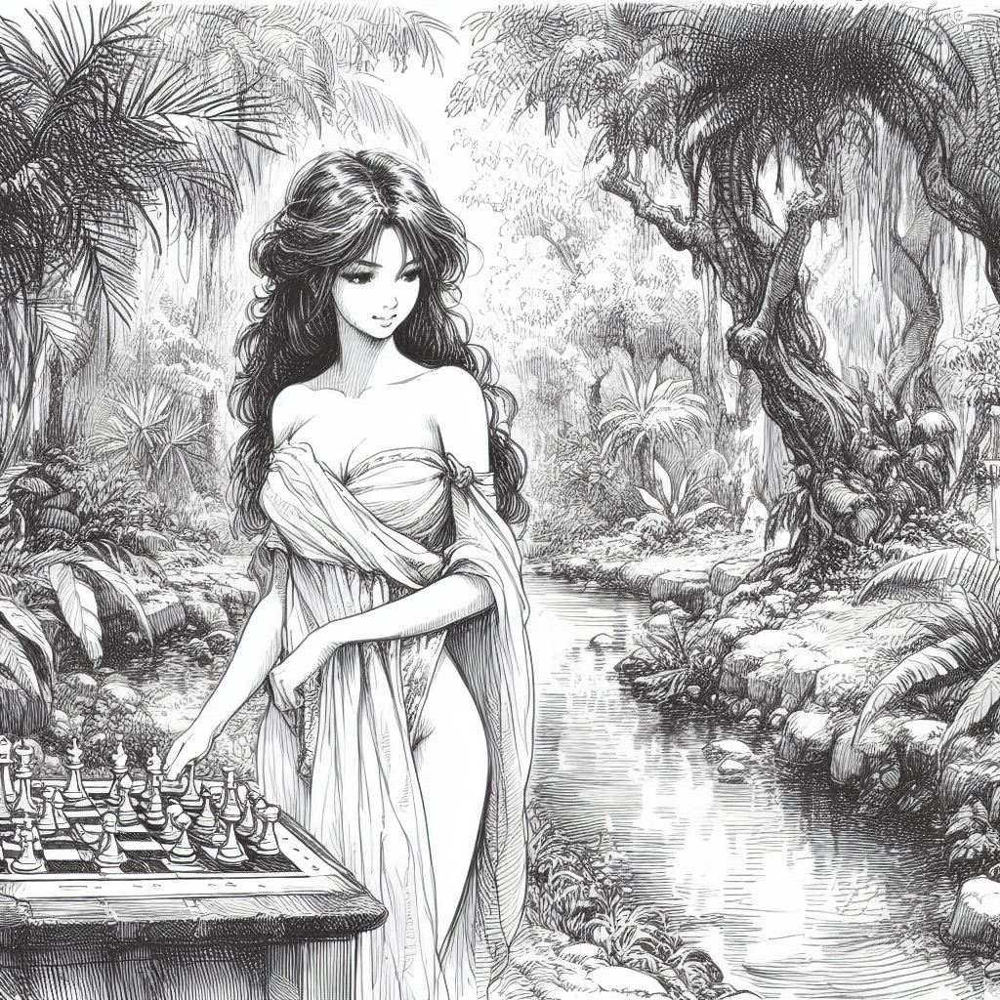

กฎของหมากรุกสากล
หมากรุกสากล ซึ่งมักเรียกว่า เกมแห่งกษัตริย์ เป็นเกมกลยุทธ์ที่มีประวัติยาวนานหลายพันปีซึ่งผสมผสานการคิดวิเคราะห์ การคาดการณ์ และความคิดสร้างสรรค์
วัตถุประสงค์ของเกม
วัตถุประสงค์ของหมากรุกคือการทำให้กษัตริย์ของฝ่ายตรงข้ามรุกจน นั่นหมายถึงการวางกษัตริย์ของศัตรูในตำแหน่งที่กำลังถูกคุกคามให้ถูกจับ (รุก) และไม่มีการเดินใดที่จะช่วยให้พ้นจากการคุกคามนี้ได้
การตั้งค่า
- กระดานหมากรุกประกอบด้วยช่องสีอ่อนและสีเข้มสลับกัน 64 ช่อง เป็นตาราง 8×8
- ผู้เล่นแต่ละคนเริ่มต้นด้วยหมาก 16 ตัว: กษัตริย์หนึ่งตัว, ควีนหนึ่งตัว, เรือสองตัว, ม้าสองตัว, โคนสองตัว และเบี้ยแปดตัว
- การจัดวางเริ่มต้นจะวางเบี้ยไว้ที่แถวที่สองด้านหน้าของผู้เล่นแต่ละคน และหมากอื่น ๆ บนแถวแรกตามลำดับที่แน่นอน
- กระดานหมากรุกต้องวางในลักษณะที่ผู้เล่นแต่ละคนมีช่องสีขาวอยู่ที่มุมขวาล่าง
การเคลื่อนที่ของหมาก
-
หมากแต่ละประเภทเคลื่อนที่ตามกฎเฉพาะ:
- กษัตริย์สามารถเคลื่อนที่ได้หนึ่งช่องในทุกทิศทาง
- ควีนสามารถเคลื่อนที่ได้กี่ช่องก็ได้ในทุกทิศทาง: แนวนอน แนวตั้ง หรือแนวทแยง
- เรือเคลื่อนที่ในแนวนอนหรือแนวตั้งได้กี่ช่องก็ได้
- ม้าเคลื่อนที่เป็นรูปตัว "L": สองช่องในทิศทางหนึ่ง (แนวนอนหรือแนวตั้ง) แล้วหนึ่งช่องในทิศทางตั้งฉาก
- โคนเคลื่อนที่ในแนวทแยงได้กี่ช่องก็ได้
- เบี้ยเคลื่อนที่ไปข้างหน้าหนึ่งช่อง แต่ในการเดินครั้งแรก สามารถเดินไปข้างหน้าสองช่องได้ เบี้ยจับหมากในแนวทแยงไปข้างหน้าหนึ่งช่อง
- หมากไม่สามารถเคลื่อนที่ผ่านหมากตัวอื่นได้ ยกเว้นม้าที่สามารถกระโดดข้ามได้
- หากหมากเคลื่อนที่ไปยังช่องที่มีหมากของฝ่ายตรงข้ามอยู่ หมากนั้นจะถูกจับและถูกนำออกจากกระดาน
การเดินพิเศษ
- รุกฟรี
- หากทั้งกษัตริย์และเรือที่เกี่ยวข้องยังไม่เคยเคลื่อนที่ และหากไม่มีหมากระหว่างพวกมัน กษัตริย์สามารถเคลื่อนที่สองช่องไปทางเรือ และเรือจะกระโดดข้ามกษัตริย์ไปยังช่องที่ติดกัน การเดินพิเศษนี้ช่วยให้กษัตริย์ปลอดภัยในขณะที่นำเรือเข้ามามีส่วนร่วมในเกม
- การจับผ่าน
- หากเบี้ยเดินไปข้างหน้าสองช่องจากตำแหน่งเริ่มต้นและจบลงข้างเบี้ยของฝ่ายตรงข้าม เบี้ยของฝ่ายตรงข้ามสามารถจับมันได้เสมือนว่าเบี้ยเดินไปข้างหน้าเพียงหนึ่งช่อง การจับนี้ต้องทำทันทีหลังจากการเดินเบี้ยสองช่อง มิฉะนั้นโอกาสจะหมดไป
- การเลื่อนขั้นเบี้ย
- เมื่อเบี้ยถึงแถวสุดท้าย (ขอบตรงข้ามของกระดาน) มันสามารถเลื่อนขั้นและเปลี่ยนเป็นหมากอื่นใดก็ได้ที่มีสีเดียวกัน (ยกเว้นกษัตริย์) โดยทั่วไปมักเลือกเป็นควีนเพื่อให้มีค่าสูงสุด
รุกและรุกจน
- กษัตริย์อยู่ในสถานะรุกเมื่อถูกคุกคามให้ถูกจับโดยหมากของฝ่ายตรงข้าม ผู้เล่นต้องทำการเดินที่ขจัดการคุกคามนี้
- รุกจนเกิดขึ้นเมื่อกษัตริย์อยู่ในสถานะรุกและไม่มีการเดินที่ถูกกฎใดที่จะขจัดการคุกคามนี้ได้ ผู้เล่นที่กษัตริย์ถูกรุกจนจะแพ้เกม
อับและเสมอ
- อับเกิดขึ้นเมื่อผู้เล่นที่ถึงตาเดินไม่มีการเดินที่ถูกกฎใดที่เป็นไปได้ และกษัตริย์ของพวกเขาไม่ได้อยู่ในสถานะรุก ในกรณีนี้ เกมจะประกาศว่าเสมอ (เท่ากัน)
- เสมอเนื่องจากหมากไม่เพียงพอ: หากผู้เล่นทั้งสองไม่มีหมากเพียงพอที่จะบังคับให้เกิดรุกจน (เช่น กษัตริย์ต่อกษัตริย์, กษัตริย์และโคนต่อกษัตริย์) เกมจะเสมอ
- เสมอจากการซ้ำ: หากตำแหน่งเดียวกันเกิดขึ้นสามครั้งโดยที่ผู้เล่นคนเดียวกันต้องเดินและมีความเป็นไปได้ในการเคลื่อนที่เหมือนกัน เกมจะประกาศว่าเสมอ
การจบเกม
- เกมสามารถจบลงด้วยรุกจน, อับ, หรือเสมอโดยข้อตกลงร่วมกันระหว่างผู้เล่น, โดยหมากไม่เพียงพอ, หรือโดยการซ้ำสามครั้ง
- หากผู้เล่นไม่สามารถทำการเดินที่ถูกกฎได้ (มักเรียกว่า
ตำแหน่งตาย
) เกมจะจบลง
หมากรุกในศิลปะและวรรณกรรม
หมากรุกมีประวัติศาสตร์อันรุ่งเรืองที่เกี่ยวพันกับศิลปะและวรรณกรรม มีผลงานที่โดดเด่นสองชิ้นที่เป็นที่สังเกตเป็นพิเศษ:
Scacchi ludus
(1527) โดย Marco Girolamo Vida- บทกวีนี้บรรยายถึงเกมหมากรุกระหว่างเทพเจ้าบนเขาโอลิมปัส ความงดงามของมันดึงดูดความสนใจของผู้อ่าน สร้างแรงบันดาลใจให้กับผลงานในภายหลัง เช่น บทกวี
Chess
โดย Jan Kochanowski Caïssa: or The Game of Chess
(1772) โดย William Jones- บทกวีนี้แนะนำ Caïssa ซึ่งเป็นตัวละครในตำนานที่เป็นตัวแทนของจิตวิญญาณแห่งหมากรุก ซึ่งต่อมาได้กลายเป็นมิวส์ของเกมนี้
ผลงานเหล่านี้มีอิทธิพลอย่างยั่งยืนต่อวัฒนธรรมหมากรุก
พวกมันได้รับการอ้างอิงในวรรณกรรม การวิเคราะห์เกม และแม้แต่ในงานศิลปะ ทั้ง Scacchi ludus
และ Caïssa ยังคงเป็นแง่มุมสำคัญของมรดกทางวัฒนธรรมของหมากรุก
